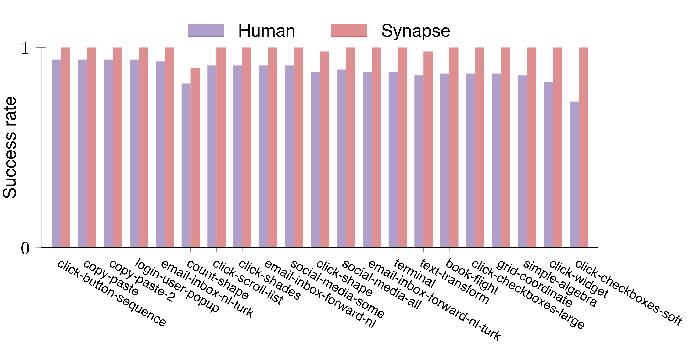
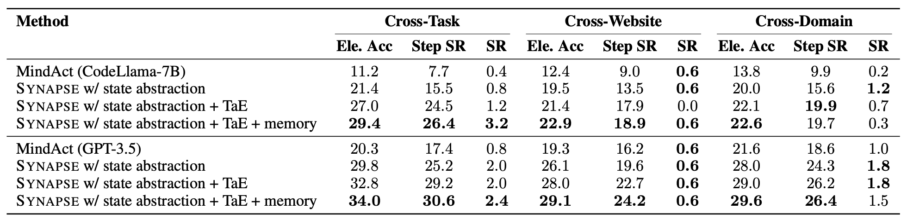

Synapse vs Human

Building agents with large language models (LLMs) for computer control is a burgeoning research area, where the agent receives computer states and performs actions to complete complex tasks. Previous computer agents have demonstrated the benefits of in-context learning (ICL); however, their performance is hindered by several issues. First, the limited context length of LLMs and complex computer states restrict the number of exemplars, as a single webpage can consume the entire context. Second, the exemplars in current methods, such as high-level plans and multi-choice questions, cannot represent complete trajectories, leading to suboptimal performance in long-horizon tasks. Third, existing computer agents rely on task-specific exemplars and overlook the similarity among tasks, resulting in poor generalization to novel tasks. To address these challenges, we introduce Synapse, a computer agent featuring three key components: i) state abstraction, which filters out task-irrelevant information from raw states, allowing more exemplars within the limited context, ii) trajectory-as-exemplar prompting, which prompts the LLM with complete trajectories of the abstracted states and actions for improved multi-step decision-making, and iii) exemplar memory, which stores the embeddings of exemplars and retrieves them via similarity search for generalization to novel tasks. We evaluate Synapse on MiniWoB++, a standard task suite, and Mind2Web, a real-world website benchmark. In MiniWoB++, Synapse achieves a 99.2% average success rate (a 10% relative improvement) across 64 tasks using demonstrations from only 48 tasks. Notably, Synapse is the first ICL method to solve the book-flight task in MiniWoB++. Synapse also exhibits a 56% relative improvement in average step success rate over the previous state-of-the-art prompting scheme in Mind2Web.
Synapse consists of three main components. The process begins with state abstraction, where raw computer states (e.g., the HTML of webpages) are processed into concise task-relevant observations via few-shot learning of the LLM. This step reduces the number of tokens needed for each state, a prerequisite for the second component: trajectory-as-exemplar (TaE) prompting. In TaE prompting, the LLM is prompted with exemplary trajectories (a sequence of abstracted states and actions) and the current history to determine the next action. These prompts are retrieved from the exemplar memory using similarity search. The retrieval process utilizes the embeddings of task metadata, with each metadata mapped to the corresponding exemplars.

Comparison of trajectory-as-exemplar prompting with other prompting schemes. The illustration is based on the terminal task in MiniWoB++, where the agent is asked to delete a file ending with a specific extension. To solve this task, RCI (Kim et al., 2023) prompts the LLM with a step-by-step plan combined with the current state and the previous actions to generate each action, while MindAct (Deng et al., 2023) prompts the LLM with MCQ-formatted exemplars at each step. In contrast, Synapse uses a straightforward prompting scheme based on trajectory-level exemplars. This exemplar structure offers a consistent and interactive format, is more informative, and enables the LLM to produce temporally abstracted actions until a new state is required. As shown above, the LLM generates two consecutive actions: type(ls) and press(enter) without querying the new state. After executing these actions, it pauses to receive the new state for subsequent actions.
Synapse is the first ICL method that achieves human-level performance in MiniWoB++. It outperforms previous self-correction methods, including RCI and AdaPlanner. *Pix2Act and AdaPlanner are concurrent with our work. The outlier tasks are determined with an interquartile range of 1.5.
Mind2Web results and ablations with CodeLlama-7B (top) and GPT-3.5 (bottom). We gradually add state abstraction, TaE prompting, and memory to demonstrate the effectiveness of each component. In Synapse w/ state abstraction, we simply use direct generation with fewer top-ranked elements in clean observations, outperforming the MCQ-formatted prompting used in MindAct. Synapse w/ state abstraction + TaE further shows the benefits of using trajectories as exemplars. In both these variants, we use static few-shot exemplars. Finally, we encode the training set as memory and retrieve exemplars via similarity search, which further improves performance.

@article{zheng2023synapse,
title={Synapse: Trajectory-as-Exemplar Prompting with Memory for Computer Control},
author={Zheng, Longtao and Wang, Rundong and Wang, Xinrun and An, Bo},
journal={arXiv preprint arXiv:2306.07863},
year={2023}
}